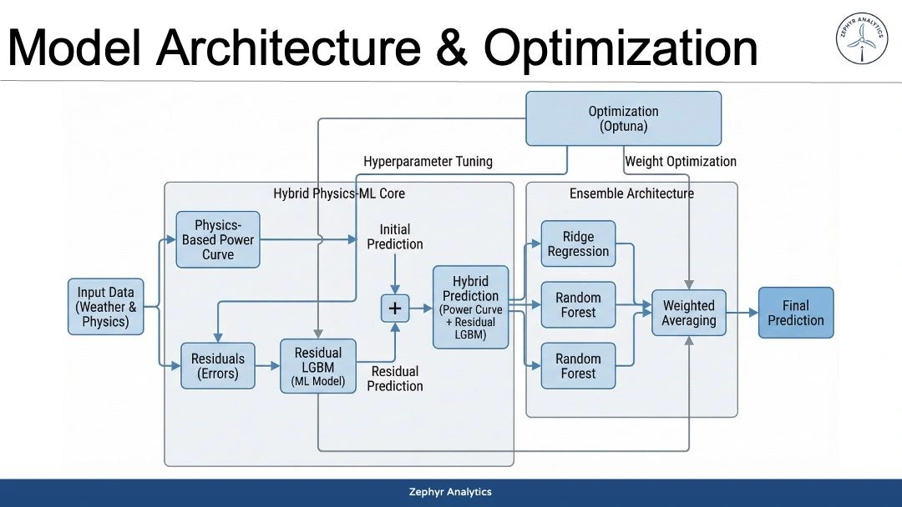
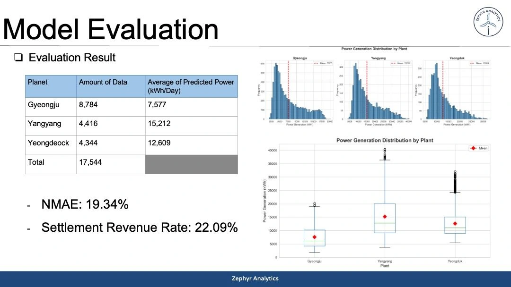

Energy Forecasting
Physics-Guided Wind Power Prediction
BDA × EWP × 60Hertz · Zephyr Analytics · 2025
3rd Place · Excellence AwardPredicting hourly wind-farm generation with a physical power curve, learned error corrections, and an optimized ensemble.
At a glance
- The problem
- Forecast generation at three wind farms and assess both prediction error and the competition’s settlement criterion.
- The approach
- Start with a physical power curve, learn its remaining error, and combine predictions in a tuned ensemble.
- Outcome / status
- 3rd of 270 teams; reported NMAE 19.34% and settlement revenue rate 22.09%.
- My contribution
- Model architecture design and hyperparameter optimization in Team Zephyr Analytics.

Let physics explain the baseline, then learn the remainder
Describe the weather
Input: weather and derived atmospheric features for each wind farm.
Predict and correct
A physical power curve gives the baseline; LightGBM estimates its residual error.
Combine models
Blend the hybrid forecast with other predictors; tune with Optuna.
Evaluate usefulness
Report forecast error and the competition’s settlement revenue rate.
- Team placement
- 3rd / 270
- NMAE
- 19.34%
- Settlement revenue rate
- 22.09%
Engineering decisions
Divide the problem between physics and learning
A turbine’s power curve provides a physically meaningful starting point. Weather-derived features, including air-density estimation, support that baseline. A residual model then learns the difference between the baseline and observed generation, leaving the ensemble to combine complementary predictions.
My contribution: architecture and optimization
I worked on model architecture design and hyperparameter optimization. The team combined the hybrid forecast with Ridge Regression and Random Forest predictions and tuned parameters and ensemble weights with Optuna. Derrick Junsu Lee led machine learning and testing; Hyunseung Lee handled preprocessing and feature engineering.
Assess the forecast in its operating context
The team placed third among 270 teams. The presentation reports 19.34% normalized mean absolute error (NMAE) and a 22.09% settlement revenue rate under the competition rule. The site-wise distributions below provide context for the aggregate scores. These are team-reported competition results, not a claim about deployment performance.


Implementation notes & source evidence
Two objectives for an operational forecast
The competition required hourly generation forecasts for Gyeongju, Yangyang, and Yeongdeok. Prediction error and settlement revenue describe different aspects of usefulness, so the project reported both. A forecast that looks numerically close must still be evaluated under the competition’s economic scoring rule.
Let physics explain the baseline
The team used a physical power curve and weather-derived features, including air-density estimation informed by the Arden–Buck equation. This gives the model a physical starting point: weather conditions imply an expected generation level. A residual LightGBM model then corrects the baseline’s remaining error instead of making the entire mapping depend on a single unconstrained predictor.
Sources: Team architecture slide

My contribution: architecture and optimization
I worked on model architecture design and hyperparameter optimization. The team combined the hybrid prediction with Ridge Regression and Random Forest models and used Optuna for tuning, including ensemble weights. Derrick Junsu Lee led machine learning and testing, while Hyunseung Lee handled preprocessing and feature engineering.
Validation and engineering takeaway
Zephyr Analytics placed third among 270 teams, with reported NMAE of 19.34% and settlement revenue rate of 22.09%. The site-wise distributions in the evaluation slide help contextualize the aggregate result. The key design lesson is to divide the problem between a physical baseline, learned error correction, and the operational evaluation criterion. These details are drawn from the supplied team slides; no public implementation repository is linked.
Sources: Team evaluation slide
Cover, architecture, and evaluation images are from the original Zephyr Analytics team presentation, supplied by Dong Hwi Kim.